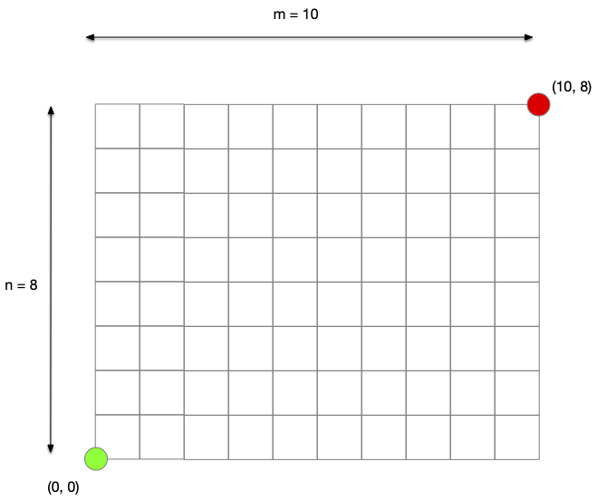

Projet chemin de Taxi
TBD à faire en vrai avec du code des exercices et tout ça.
Un chemin de Taxi est un chemin sur une grille carré allant du sommet de coordonnée $(0, 0)$ au sommet de coordonnée $(n, m)$. Ce chemin doit de plus être de longueur minimale.

Les chemins de longueurs minimales sont tous de même longueur $n+m$ et ne font que monter ou aller à droite. Ils correspondent au chemins de longueur minimum pour la distance de Manhattan. Leur nom vient de là : les taxis cherchent leurs chemins entre les building de Manhattan !
D'un point de vue graphe, tout revient à chercher un chemin dans le graphe orienté où les arcs montent ou vont à droite :

Définition
Un chemin de taxi de taille $(n, m)$ est un chemin allant du sommet $(0, 0)$ au sommet $(n, m)$ sur la grille orientée de taille $(n + 1, m + 1)$.
Définition
La grille orientée de taille $(n + 1, m + 1)$ est le graphe dont :
- l'ensemble des sommets est l'ensemble des couples $(i, j)$ avec $0\leq i \leq m$ et $0\leq j \leq n$
- l'ensemble des arcs :
- $((i, j), (i + 1, j))$ pour $0\leq i < m$ et $0\leq j \leq n$
- $((i, j), (i , j + 1))$ pour $0\leq i \leq m$ et $0\leq j < n$
Longueur et nombres de chemins
Monter que tout chemin de taxi de taille $(n, m)$ possède $n$ direction verticales et $m$ directions horizontales.
corrigé
corrigé
C'est à cause dw la distance L1.
En déduire :
Montez qu'il y a $\binom{n+m, m}$ chemins de taxis différent de taille $(n, m)$.
corrigé
corrigé
La taille de tout chemin de taxi étant $n+m$ et qu'il y a exactement $m$ directions horizontales (resp. $n$ directions verticales), il y a autant de chemin de taxi que de positions où mettre $m$ directions horizontales (resp. $n$ directions verticales) parmi $n+m$ possibilités, c'est à dire $\binom{n+m, m}$ possibilités.
On a $\binom{n+m, m} = \frac{(n+m)!}{n!(n+m-n)!} = \frac{(n+m)!}{m!(n+m-m)!} = \binom{n+m, n}$
TBD :
- les énumérer : on énumère les $\binom{n+m, m}$ possibilités
- en prendre un au hasard